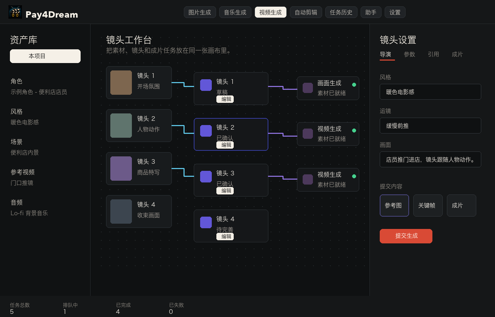
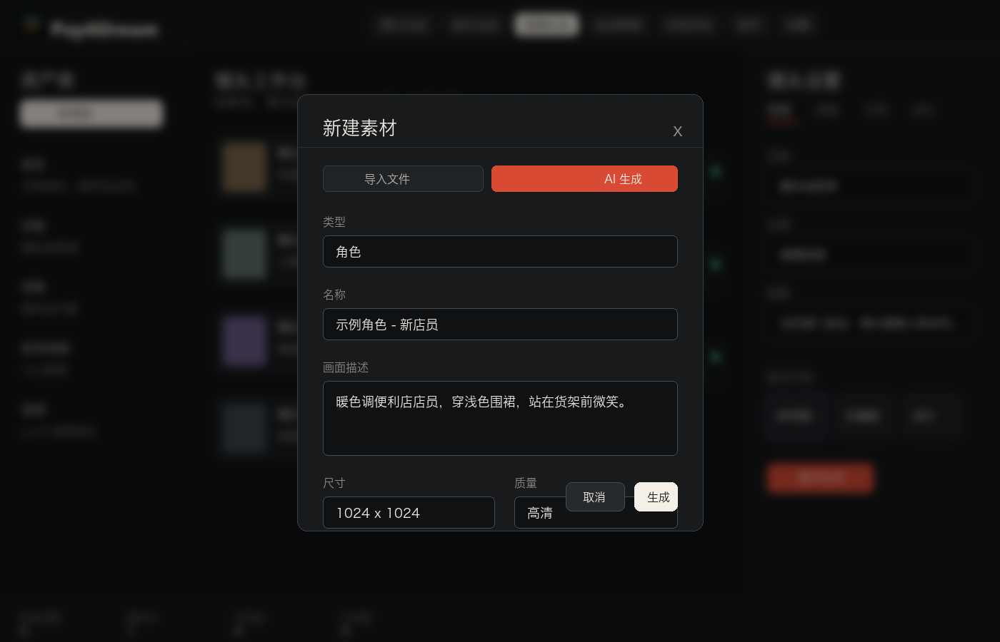

写出方向
描述主题、风格、时长和受众，先形成脚本与分镜骨架，再一步步确认。
为什么需要它
Pay4Dream 用一个本地工作台承接脚本、素材、3D 分镜、prompt、生成任务、轨道和导出记录。你可以围绕同一个项目反复修改，继续制作，也能把过程交接给团队里的其他人。
工作方式
描述主题、风格、时长和受众，先形成脚本与分镜骨架，再一步步确认。
把角色、场景、物品、参考图、参考视频和音频放进项目资产库，导入、拖入、生成和一键改图都有归属。
在统一 SceneBoard 里管理角色、场景道具、姿态、摄影机、焦距和时间线，再决定静态或动态参考路线。
真实工作台
你可以在同一个工作台里查看素材、编辑镜头、调整生成设置、保存 3D 分镜，并看到每一步的任务状态。项目越做越完整，而不是越做越分散。

适合的团队
把选题、脚本、素材生成和剪辑输出放在同一个项目中，减少跨工具搬运。
快速把功能卖点、活动物料、KM 文档和讲解脚本做成可预览的视频版本。
使用自己的模型账号，项目和素材留在本机，创作节奏由你自己掌控。
角色、场景道具、姿态、摄影机、焦距和时间线预览集中在同一套 3D Storyboard 流程。
本地媒体、Cadrage 和 iOS .p4dcapture 可以成为静态或动态参考，导入、编辑和预览不会提交生成。
常用逐镜头操作使用简洁的「生成」，节点画布、上下游关系和执行计划保留在「流程」。
图片集合支持折叠、恢复和行操作；LibTV 作为可选外部生成集成，如实显示登录和任务状态。

可控性
每次生成都能落回资产库和任务状态，方便继续挑选、替换、反馈和剪辑。SceneBoard、Cadrage 和 iOS Capture 参考也能随镜头继续进入下游制作。
使用前须知
你可以在应用里配置常用模型服务。密钥保存在本机，用来直接连接对应服务。
首次启动需要邀请码。没有邀请码时，可以通过下载页的邮箱联系获取。
下载页提供 macOS 与 Windows 安装包，也保留文件核对信息，方便你确认来源。
开始试用